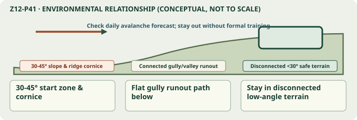

Z12-P41 · Extreme environments · New manuscript
Identify avalanche start zones, wind-loaded slopes, cornices and valley runouts
Keep winter mountain travel completely outside avalanche terrain unless formally trained, equipped and verified by current forecasts.
When it applies · Snow-covered mountain slopes, steep river bluffs, alpine bowls and valley floors beneath steep terrain.
Equipment · Official regional avalanche center forecast, slope-angle topo map and strict terrain-avoidance discipline.

Actions
- Check the official regional avalanche forecast daily before winter mountain travel—remembering most human-triggered avalanches release on slopes between roughly 30 and 45 degrees (and steep wind-loaded convex rolls).[E23, X10]
- Look high above seemingly flat valley trails and meadows: large slides travel far down gullies and across flat valley runout zones, and wind-sculpted overhanging snow cornices fracture far back behind ridge crests.[E23]
- Stick strictly to low-angle terrain (below 30 degrees) completely disconnected from steep slopes above unless every party member holds certified avalanche training, carries a beacon/shovel/probe and follows verified forecast guidance.[E23, ED]
Failure recognition · Skiing or snowshoeing happily along a flat snowy creek gully directly beneath steep wind-loaded 38-degree canyon walls.[E23]
Verify · Confirm both your current slope angle AND all terrain connected overhead sit safely outside avalanche start zones and runouts.[E23, N02, ED]
Stop or change course · High/Considerable avalanche danger ratings, steep snow slopes or lack of formal avalanche training and rescue gear require staying strictly in flat disconnected terrain.[E23]
Evidence and editorial notes
- E23 · National Avalanche Center / USFS · Avalanche Encyclopedia (current web edition)
- Section: Avalanche Encyclopedia > Terrain, Slopes, and Runout Zones · Conditions: Winter travel and camping in snowy sloped or mountain terrain
Support: Avalanches can initiate on slopes roughly 30 to 45 degrees and travel far into flatter runout zones below; avoid camping beneath steep snow slopes, cornices, or gullies without formal avalanche training and current forecasts.
Limitations: Gentle flat valley floors can still sit inside runout paths beneath steeper upper slopes. · Conflicting evidence: None; strictly excludes unvalidated snow-shelter placement in avalanche terrain.
Editorial note: Enforces avalanche-terrain exclusion on all winter shelter cards. · Specialist reviewer: Avalanche safety and winter shelter
Primary source · checked 2026-11-24 - N02 · USGS · Topographic Map Symbols (agency PDF)
- Section: Topographic Map Symbols > Contours, Water, Vegetation and Boundaries · Conditions: Interpreting standard USGS 1:24,000 and US Topo map sheets
Support: Contour spacing indicates slope steepness, index contours give elevation values, blue features mark water/wetlands and standard symbols distinguish roads, trails, cliffs and marshes.
Limitations: Small terrain hazards (boulders, undercut banks, fallen timber, thin ice) fall below map contour interval resolution. · Conflicting evidence: None; anchors terrain and contour interpretation cards.
Editorial note: Explains contour reading alongside map-resolution limitations. · Specialist reviewer: Cartography and search and rescue
Primary source · checked 2026-11-24 - X10 · NPS · All About Weather: Rocky Mountain National Park (2026 web edition)
- Section: Annual Climate Conditions; seasonal descriptions · Conditions: High-elevation ridges, alpine passes and mountain weather
Support: Mountain temperatures drop sharply with elevation and sunset, afternoon thunderstorms build rapidly over exposed ridges (requiring early starts and turning back below treeline), and steep snowfields conceal runout hazards.
Limitations: Clear morning skies routinely shift to severe lightning and sleet by early afternoon. · Conflicting evidence: None; integrates with E07, E23 and CDC-ALT.
Editorial note: Grounds mountain timing, treeline retreat and elevation-cooling cards. · Specialist reviewer: Mountain safety and meteorology
Primary source · checked 2026-11-25
Source lineage · National Avalanche Center and USFS avalanche guidance; new manuscript · Classification · New manuscript.